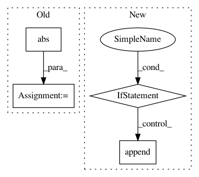

9cf2bcdb24f23a17ec11e69b8885851771dfd3d8,cube/models/vocoder.py,BeeCoder,learn,#BeeCoder#,121
Before Change
sys.stdout.flush()
output_power = self._predict_one(mgc[mgc_index], runtime=False)
// print(np.abs(signal_fft[mgc_index]))
fft_pow = 20 * np.log10(np.maximum(1e-5, np.abs(signal_fft[mgc_index]))) // np.abs(signal_fft[mgc_index])
min_level_db = -100.0
fft_pow = np.clip((fft_pow - min_level_db) / -min_level_db, 0, 1)
// print (fft_pow)
// print (fft_angle)
// print("")
losses.append(dy.binary_log_loss(output_power, dy.inputVector(fft_pow)))
After Change
pred_output = self._predict_one(mgc[mgc_index], runtime=False)
if mgc_index != len(mgc) - 1:
losses.append(dy.squared_distance(pred_output, dy.inputVector(
wave[mgc_index * self.UPSAMPLE_COUNT:mgc_index * self.UPSAMPLE_COUNT + self.UPSAMPLE_COUNT])))
if len(losses) >= batch_size:
loss = dy.esum(losses)
total_loss += loss.value()
loss.backward()
In pattern: SUPERPATTERN
Frequency: 3
Non-data size: 4
Instances
Project Name: tiberiu44/TTS-Cube
Commit Name: 9cf2bcdb24f23a17ec11e69b8885851771dfd3d8
Time: 2018-10-25
Author: boros@adobe.com
File Name: cube/models/vocoder.py
Class Name: BeeCoder
Method Name: learn
Project Name: daavoo/pyntcloud
Commit Name: 8d63d75858cc6df30ea19c55f0da955d8d46f53a
Time: 2018-07-26
Author: daviddelaiglesiacastro@gmail.com
File Name: pyntcloud/core_class.py
Class Name: PyntCloud
Method Name: plot
Project Name: erichson/ristretto
Commit Name: 83579d7761d6bc995e1e6e90cd376191e648081e
Time: 2018-03-07
Author: Benli11@users.noreply.github.com
File Name: ristretto/nmf/rnmf_fhals.py
Class Name:
Method Name: rnmf_fhals